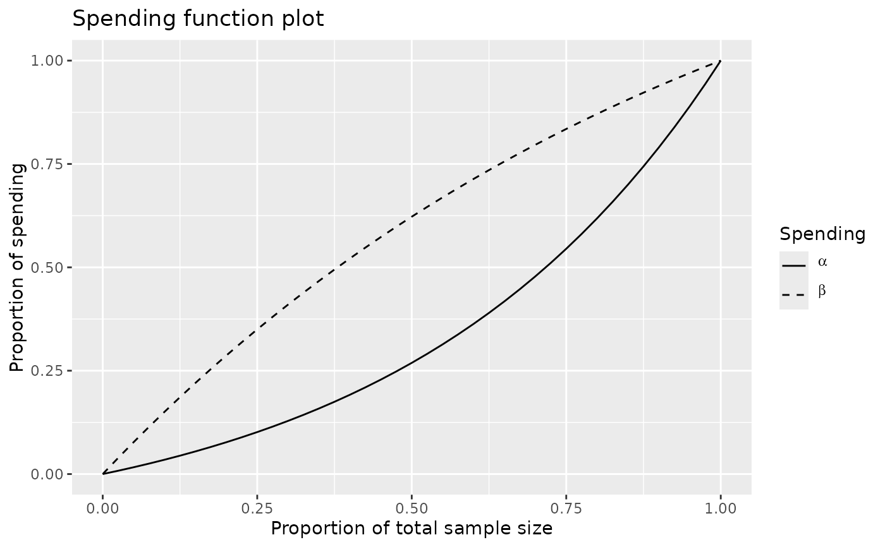
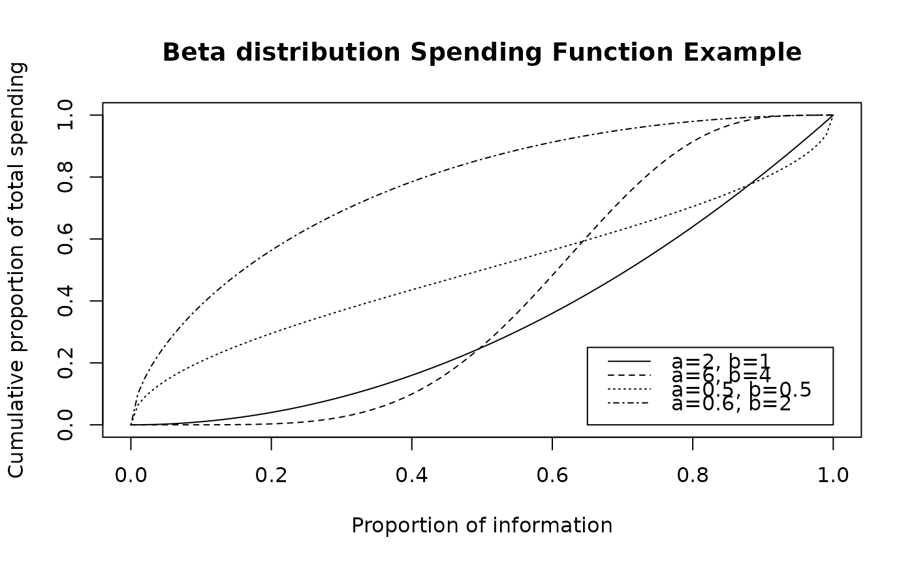

Spending Function
Usage
# S3 method for spendfn
summary(object, ...)
spendingFunction(alpha, t, param)Arguments
- object
A spendfn object to be summarized.
- ...
Not currently used.
- alpha
Real value \(> 0\) and no more than 1. Defaults in calls to
gsDesign()arealpha=0.025for one-sided Type I error specification andalpha=0.1for Type II error specification. However, this could be set to 1 if, for descriptive purposes, you wish to see the proportion of spending as a function of the proportion of sample size/information.- t
A vector of points with increasing values from 0 to 1, inclusive. Values of the proportion of sample size/information for which the spending function will be computed.
- param
A single real value or a vector of real values specifying the spending function parameter(s); this must be appropriately matched to the spending function specified.
Value
spendingFunction and spending functions in general produce an
object of type spendfn.
- name
A character string with the name of the spending function.
- param
any parameters used for the spending function.
- parname
a character string or strings with the name(s) of the parameter(s) in
param.- sf
the spending function specified.
- spend
a vector of cumulative spending values corresponding to the input values in
t.- bound
this is null when returned from the spending function, but is set in
gsDesign()if the spending function is called from there. Contains z-values for bounds of a design.- prob
this is null when returned from the spending function, but is set in
gsDesign()if the spending function is called from there. Contains probabilities of boundary crossing ati-th analysis forj-th theta value input togsDesign()inprob[i,j].
Note
The gsDesign technical manual is available at https://keaven.github.io/gsd-tech-manual/.
References
Jennison C and Turnbull BW (2000), Group Sequential Methods with Applications to Clinical Trials. Boca Raton: Chapman and Hall.
Author
Keaven Anderson keaven_anderson@merck.com
Examples
# Example 1: simple example showing what most users need to know
# Design a 4-analysis trial using a Hwang-Shih-DeCani spending function
# for both lower and upper bounds
x <- gsDesign(k = 4, sfu = sfHSD, sfupar = -2, sfl = sfHSD, sflpar = 1)
# Print the design
x
#> Asymmetric two-sided group sequential design with
#> 90 % power and 2.5 % Type I Error.
#> Upper bound spending computations assume
#> trial continues if lower bound is crossed.
#>
#> Sample
#> Size ----Lower bounds---- ----Upper bounds-----
#> Analysis Ratio* Z Nominal p Spend+ Z Nominal p Spend++
#> 1 0.324 0.03 0.5136 0.0350 2.80 0.0025 0.0025
#> 2 0.649 0.88 0.8096 0.0273 2.58 0.0049 0.0042
#> 3 0.973 1.51 0.9349 0.0212 2.34 0.0096 0.0069
#> 4 1.297 2.09 0.9817 0.0165 2.09 0.0183 0.0114
#> Total 0.1000 0.0250
#> + lower bound beta spending (under H1):
#> Hwang-Shih-DeCani spending function with gamma = 1.
#> ++ alpha spending:
#> Hwang-Shih-DeCani spending function with gamma = -2.
#> * Sample size ratio compared to fixed design with no interim
#>
#> Boundary crossing probabilities and expected sample size
#> assume any cross stops the trial
#>
#> Upper boundary (power or Type I Error)
#> Analysis
#> Theta 1 2 3 4 Total E{N}
#> 0.0000 0.0025 0.0042 0.0065 0.0072 0.0203 0.5477
#> 3.2415 0.1695 0.3553 0.2774 0.0978 0.9000 0.7533
#>
#> Lower boundary (futility or Type II Error)
#> Analysis
#> Theta 1 2 3 4 Total
#> 0.0000 0.5136 0.3156 0.1169 0.0336 0.9797
#> 3.2415 0.0350 0.0273 0.0212 0.0165 0.1000
# Summarize the spending functions
summary(x$upper)
#> [1] "Hwang-Shih-DeCani spending function with gamma = -2"
summary(x$lower)
#> [1] "Hwang-Shih-DeCani spending function with gamma = 1"
# Plot the alpha- and beta-spending functions
plot(x, plottype = 5)

# What happens to summary if we used a boundary function design
x <- gsDesign(test.type = 2, sfu = "OF")
y <- gsDesign(test.type = 1, sfu = "WT", sfupar = .25)
summary(x$upper)
#> [1] "O'Brien-Fleming boundary"
summary(y$upper)
#> [1] "Wang-Tsiatis boundary with Delta = 0.25"
# Example 2: advanced example: writing a new spending function
# Most users may ignore this!
# Implementation of 2-parameter version of
# beta distribution spending function
# assumes t and alpha are appropriately specified (does not check!)
sfbdist <- function(alpha, t, param) {
# Check inputs
checkVector(param, "numeric", c(0, Inf), c(FALSE, TRUE))
if (length(param) != 2) {
stop(
"b-dist example spending function parameter must be of length 2"
)
}
# Set spending using cumulative beta distribution and return
x <- list(
name = "B-dist example", param = param, parname = c("a", "b"),
sf = sfbdist, spend = alpha *
pbeta(t, param[1], param[2]), bound = NULL, prob = NULL
)
class(x) <- "spendfn"
x
}
# Now try it out!
# Plot some example beta (lower bound) spending functions using
# the beta distribution spending function
t <- 0:100 / 100
plot(
t, sfbdist(1, t, c(2, 1))$spend,
type = "l",
xlab = "Proportion of information",
ylab = "Cumulative proportion of total spending",
main = "Beta distribution Spending Function Example"
)
lines(t, sfbdist(1, t, c(6, 4))$spend, lty = 2)
lines(t, sfbdist(1, t, c(.5, .5))$spend, lty = 3)
lines(t, sfbdist(1, t, c(.6, 2))$spend, lty = 4)
legend(
x = c(.65, 1), y = 1 * c(0, .25), lty = 1:4,
legend = c("a=2, b=1", "a=6, b=4", "a=0.5, b=0.5", "a=0.6, b=2")
)
